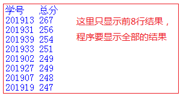

模拟试卷1
1、本次模拟考试，不计算分数。
2、由于疫情原因，大家不要到机房，用自己的电脑来做题。
3、考试时间为两小时，与期末考试的时长相同
请在
2021-06-01 21:15前完成以下题目。
1、(
单选)注释是程序员在代码中加入的一行或多行信息，它是辅助性文字，会被编译或解释器略去，不被计算机执行。Python语言的单行注释符是( )(本题分数:2)
A) //
B) '
C) #D) ##
您的答案:
正确率:未评定 ★★2、(
单选)下列赋值语句中，正确的是（）(本题分数:2)
A) a,b=1
B) a,b=1,2C) a+b,c=3,4
D) a,b=1,2,3
您的答案:
正确率:未评定 ★★3、(
单选)以下操作，能将二进制字符串'0100'，转换成对应的十进制整数的是(本题分数:2)
A) int('0100')
B) int('0100',2)C) eval('0100')
D) eval('0100',2)
您的答案:
正确率:未评定 ★★4、(
单选)对字符串a = "1234567890"进行切片操作，要获得结果'2468'，正确的切片方法应该是（）。(本题分数:2)
A) a[:-1:2]
B) a[::2]
C) a[1::2]
D) a[1:-1:2]您的答案:
正确率:未评定 ★★5、(
单选)下面程序的输出结果是：
for c in "University":
if c=="s":
break
print(c,end="")
(本题分数:2)
A) UniverB) sity
C) University
D) Univerity
您的答案:
正确率:未评定 ★★6、(
单选)下面程序的输出结果是：
total=2.0
for i in range(1,5):
total+=i
print(total)
(本题分数:2)
A) 17.0
B) 12
C) 12.0D) 10
您的答案:
正确率:未评定 ★★7、(
单选)以下程序的执行结果是。
data = 50
try:
data = data/0
except ZeroDivisionError:
print('除数不能为0')
else:
print('除法正确 ')
finally:
print('程序结束')
(本题分数:2)
A) 除数不能为0
程序结束B) 除数不能为0
C) 除法正确
程序结束
D) 程序结束
您的答案:
正确率:未评定 ★★8、(
单选)下面语句的输出结果是：
n = 0
def func(a,b):
n = b
return a+n
s = func(1, 2)
print(s, n)
(本题分数:2)
A) 1 0
B) 1 2
C) 3 0D) 3 2
您的答案:
正确率:未评定 ★★9、(
单选)关于以下程序，说法正确的个数有（）个。
def count (N):
if (N <= 0):
return "请输入一个正整数"
if (N > 9):
return "计数结束"
else:
return count(N+1)
print(count(6))
（1）count是一个递归函数；（2）函数的基例是N <= 0；（3）函数的基例是N > 9；（4）调用count(6)时，count函数返回前被调用5次；（5）调用count(6)时，count函数返回前被调用4次；(本题分数:2)
A) 1个
B) 2个
C) 3个D) 4个
【解析】1，3,4正确，2,5错误
您的答案:
正确率:未评定 ★★10、(
单选)关于lambda函数，哪个选项的描述是错误的？(本题分数:2)
A) 匿名函数
B) 将函数名作为函数结果返回
C) 定义了一种特殊的函数
D) lambda不是Python的保留字您的答案:
正确率:未评定 ★★11、(
单选)在IPO程序编写方法中，P指的是（）(本题分数:2)
A) 程序
B) 处理数据C) 输入数据
D) 输出数据
您的答案:
正确率:未评定 ★★12、(
单选)以下字典的定义，会报错的是（ ）：(本题分数:2)
A) di={1:'a',2:'b'}
B) di={'1':'a','2':'b'}
C) di={(1,3):'a',(2,4):'b'}
D) di={[1,3]:'a',[2,4]:'b'}您的答案:
正确率:未评定 ★★13、(
单选)di = {0:"a", 1:"b", 2:"c"}，以下语句能向di中增加(3:"o")的是。(本题分数:2)
A) di.get(3,"o")
B) di+={3:"o"}
C) di[3]="o"D) 以上都可以
您的答案:
正确率:未评定 ★★14、(
单选)对于一段英文文本，如果想按空格把每个单词分开，可以使用字符串的（）方法。(本题分数:2)
A) print
B) splitC) seperate
D) cut
您的答案:
正确率:未评定 ★★15、(
单选)以下程序的输出是。
y = 8
z = lambda x : x * y
print(z(6))
(本题分数:2)
A) 16
B) 64
C) 14
D) 48您的答案:
正确率:未评定 ★★16、(
单选)以下字典存储了学号和成绩信息，对字典按成绩从低到高排序，空白处的代码是( )：
dt={'20200804':75, '20200805':64, '20200806':83}
s=sorted(dt.items(),key=_____)
print(s)
(本题分数:2)
A) lambda x:x[0]
B) lambda x:x[1]C) dt.values()
D) dt.keys()
您的答案:
正确率:未评定 ★★17、(
单选)以下程序从CSV格式的文件中读入数据，将由每行数据组成的列表写入ls中，空白处的代码是：
fo=open("demo.csv", "r")
ls=[]
for line in fo:
ls.append(_____)
fo.close()
(本题分数:2)
A) line
B) line.split()
C) line.split(",")
D) line[0:-1].split(",")您的答案:
正确率:未评定 ★★18、(
单选)以下程序的输出结果是。
def test():
return 'abc', 100, [0, 1, 2]
a, b, c = test()
print(b)
(本题分数:2)
A) 'abc'
B) 100C) [0, 1, 2]
D) 程序报错
您的答案:
正确率:未评定 ★★19、(
单选)在Python语言中，要把一个中文句子按单词分开，可以使用（）库。(本题分数:2)
A) turtle
B) math
C) jiebaD) random
您的答案:
正确率:未评定 ★★20、(
单选)下面程序的输出结果是：
for c in "xyz":
for i in range(3):
if c=="y":
break
print(c,end="")
(本题分数:2)
A) xxxyyyzzz
B) xxx
C) xxxyzzz
D) xxxzzz您的答案:
正确率:未评定 ★★21、(
程序填空)以下程序获得用户输入的一个字符串s，以字符减号(-)分割s，然后将其中的首尾两段用加号(+)组合后输出。例如，输入字符串“Alice-Bob-Charis-David-Eric-Flurry”，输出“Alice+Flurry”。
s = input('请输入字符串:')
ls = __(1)__
print("{}+{}".format( __(2)__, __(3)__ ))
(本题分数:6)
【参考答案】您的答案:
正确率:未评定 ★★22、(
程序填空)以下程序计算从整数1到100的加减和，即1-2+3-4...-100。其中，所有数字为整数，从1开始递增直到100，奇数为正，偶数为负。
s = 0
count = 1
while count <=100:
if __(1)__:
s -= count
else:
__(2)__
__(3)__
print(s)
(本题分数:6)
【参考答案】您的答案:
正确率:未评定 ★★23、(
程序填空)编写函数，接收字符串参数，返回一个元组，其中第一个元素为小写字母个数，第二个元素为大写字母个数。输出该函数的调用结果。请在（1）、(2)填写合适内容。
def data(s):
r = [0, 0]
for ch in s:
if ch.isupper():
r[1] += 1
elif ch.islower():
r[__(1)__] += 1
return tuple(r)
str=input("please enter string:")
print(__(2)__)
(本题分数:4)
【参考答案】您的答案:
正确率:未评定 ★★24、(
程序填空)下面代码按行读取文件，并且将读取结果整合为一个python列表（注意去掉行尾的换行符）,请在（1）、（2）处填上合适内容完善程序
f = open('test.txt','w')
f.write('China\nAmerica\nEngland\n')
f.close()
f = open('test.txt', __(1)__)
res = []
for line in f:
line = __(2)__
res.append(line)
f.close()
print(res)
(本题分数:4)
【参考答案】您的答案:
正确率:未评定 ★★25、(
写运行结果)下列代码的运行结果是什么？
vlis = [1,2,3,4]
vlis[1:3]=[7,8]
for i in vlis:
print(i)
(本题分数:3)
【参考答案】您的答案:
正确率:未评定 ★★26、(
写运行结果)写出下列程序的运行结果。
for s in "scut":
if s=="c":
continue
for i in range(5):
print(s,end='')
if i==2 or s=='u':
break
(本题分数:3)
【参考答案】您的答案:
正确率:未评定 ★★27、(
写运行结果)下列代码的运行结果是什么？
f = open('test.txt','w')
f.write('China\nAmerica\nEngland\n')
f.close()
f = open('test.txt','r')
for line in f.readlines():
print(len(line))
f.close()
(本题分数:4)
【参考答案】您的答案:
正确率:未评定 ★★28、(
程序设计)编写程序求100以内素数之和并输出。 素数指大于1，且仅能被1和自己整除的整数。
提示：可以逐一判断100以内每个数是否为素数，然后求和。(本题分数:12)
【参考答案】方法一：
sum = 0
for i in range(2,100):
for j in range(2,i):
if i%j == 0:
break
else:
sum += i
print(sum)
方法二：使用函数
def is_prime(n):
for i in range(2,n):
if n%i == 0:
return False
return True
sum = 0
for i in range(2,100):
if is_prime(i):
sum += i
print(sum)
评分标准：
1、程序写法不唯一，只要能正确运行，结果正确，为1060，得满分
您的答案:
正确率:未评定 ★★29、(
程序设计)附件“成绩.csv”包含若干个学生的学号，语文成绩，数学成绩，英语成绩。编写程序，按语数英三科总分从高到低的顺序输出，参考样例。
(本题分数:18)
★【附件下载】★【参考答案】f=open('d:/成绩.csv','r')
ls=[]
for s in f:
s=s.replace('\n','')
if len(s)>2:
a=s.split(',')
ls.append([a[0],eval(a[1])+eval(a[2])+eval(a[3])])
ls=sorted(ls,key=lambda x:-x[1])
print('学号 总分')
for i in range(len(ls)):
print(ls[i][0],ls[i][1])
您的答案:
正确率:未评定 ★★成绩:未评定